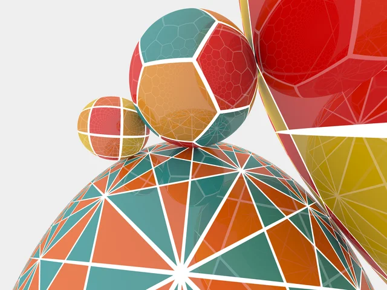
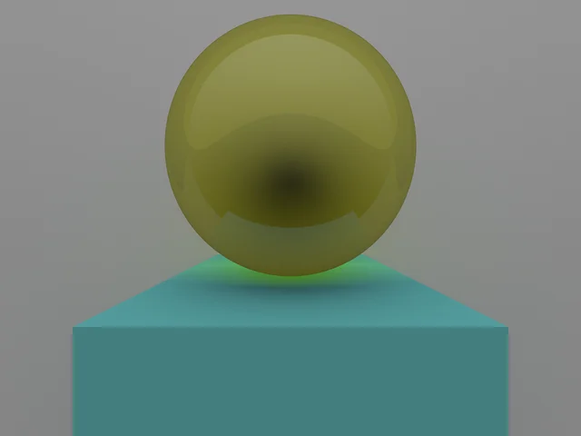
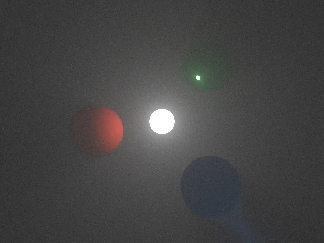

Negative curvature
Hyperbolic space
Pentagonal and star tilings cover geodesic planes. Square and hexagonal patterns live on horospheres. Reflections follow the same curved geometry as the camera rays.
Follow light through curved space, compare familiar Euclidean geometry, and see how fog reveals illumination and shadows. Open a scene to move the camera and watch the image converge.

Pentagonal and star tilings cover geodesic planes. Square and hexagonal patterns live on horospheres. Reflections follow the same curved geometry as the camera rays.

A refractive sphere, a diffuse cube, and a partly reflective plane. This familiar scene provides a reference for how materials and light behave without spatial curvature.

One bright light illuminates red diffuse, green reflective, and blue refractive spheres. Scattering fog reveals their shadows and the paths of reflected and refracted light, with no floor or ambient illumination.
The images above are offline renders and work in any browser. Each image links to the source revision used to render it; the interactive examples may have evolved since then. Interactive scenes require WebGPU and a keyboard and mouse. Drag to look or press Tab to lock the mouse, use WASD to move, and scroll to zoom. Choose a lower quality setting for smoother movement.
A tour of Hypertrace from 2020 shows the project in motion. The current web renderer brings Euclidean, hyperbolic, spherical, and fog examples into the browser.
Watch the video ↗Learn how embedded geometry and quaternion-pair isometries carry light through Euclidean, hyperbolic and spherical space. Explore tangent frames, spherical circuits, fog and the limits of floating-point precision.
Read the theory